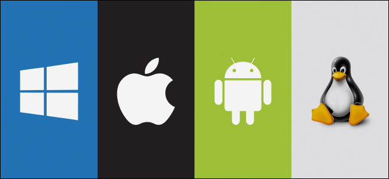

Операционные системы
Что такое операционная система
Операционная система (ОС, OS, operating system) — это набор программ, обеспечивающих работу компьютера или другого устройства и взаимодействие с ним пользователя.

Любые компьютеры, будь то ПК, ноутбуки, смартфоны или планшеты, состоят из двух групп компонентов:

Аппаратной части — процессора, оперативной памяти, клавиатуры, компьютерной мыши и так далее.
Программного обеспечения — системного и прикладного софта.
Компоненты операционной системы
Операционная система представляет собой многослойную структуру, в центре которой находится ядро. Поверх него располагаются драйверы и службы, а оболочкой выступает пользовательский интерфейс.
Ядро
Это основа операционной системы. Ядро представляет собой часть программного обеспечения, работающую напрямую с компонентами компьютера. Также оно отвечает за управление процессами, памятью компьютера, файловой системой, обработку входных и выходных данных.

Ядра бывают монолитными и модульными. В первых все инструменты, необходимые для работы, находятся внутри одной программы. Например, такое ядро использовалось в DOS. Но сейчас монолитных ядер почти не осталось, так как все операционные системы перешли на модульную архитектуру.

В модульном ядре все компоненты разделены на небольшие блоки, которые работают независимо друг от друга. Такая структура более стабильна, так как ошибки в одном компоненте не приводят к остановке всей системы. ОС с модульными ядрами в свою очередь бывают двух видов: с микроядрами, как, например, QNX и Symbian, и монолитные с подгружаемыми модулями — Windows и Linux.

Драйверы
Это программное обеспечение, благодаря которому операционная система работает с подключённым в устройстве «железом». Без драйверов она не узнает, что могут делать видеокарта, клавиатура, принтер и другие комплектующие и как правильно отправлять к ним запросы.
Виды операционных систем
Все существующие ОС можно классифицировать по нескольким признакам: разрядности, типу лицензии и области применения.

По разрядности
32-битные (x32). Адресуют до 4 ГБ оперативной памяти и могут запускать программы, написанные только под 32-битную систему.

64-битные (x64). Ограничение по оперативной памяти — до 16 ТБ. Такие ОС поддерживают 64-битные программы, а 32-битные запускают через эмулятор.

Почему так

Битность операционной системы характеризует длину двоичных чисел, с которыми она способна работать (помним, что в компьютере вся информация, в том числе текст и изображения, представляется в виде 1 и 0). Чтобы рассчитать максимальную длину числа в 32-битной системе, нужно возвести 2 в 32-ю степень:

2^32 = 4 294 967 296

Это также означает, что максимальное значение адреса ячейки ОЗУ, к которой может обратиться 32-битная система, не может превышать 4 294 967 296. Отсюда и ограничение на объём оперативной памяти в 4 ГБ.

Все современные версии операционных систем на компьютерах и смартфонах являются 64-битными. 32-битные версии иногда используют в устройствах со слабым «железом».
История развития операционных систем
История развития операционных систем насчитывает около 70 лет. За это время простейший набор заданий для мейнфреймов, написанный на перфоленте, эволюционировал в то, что сейчас мы видим на экране компьютера или смартфона.

Всю историю можно разделить на три этапа.

Первый этап (1955–1965 годы)
История операционных систем начинается в 1955 году, когда инженер General Motors Роберт Л. Патрик и программист North American Airlines Оуэн Мок разработали для IBM 704 GM-NAA I/O. Её иногда называли системой ввода — вывода.

GM-NAA I/O позволяла мейнфрейму автоматически выполнять задания по проведению сложных математических вычислений. Их результаты выводились на подключённый принтер. Благодаря этому операторы мейнфрейма могли проводить вычисления без постоянной смены специальных плат.
В 1964 году появилась ОС Multics, созданная совместными усилиями Мичиганского университета, General Electric и Bell Labs. В ней была реализована возможность параллельной работы нескольких программ, концепция виртуальной памяти и файловая система на основе дерева каталогов, используемые и сегодня.

Второй этап (1965–1980 годы)
В 1969 году в исследовательской лаборатории Bell Labs разработали ОС Unix. Она — основа современных операционных систем.

Unix поддерживала язык C и протокол TCP/IP. Это первая ОС, которую можно было установить на сервер. К ней могли подключиться компьютеры-клиенты, позволяя одновременно работать нескольким пользователям.
Популярные операционные системы
Windows. Знакомая большинству операционная система с многолетней историей. Её главные преимущества — это дружелюбный интерфейс, обширная совместимость с программами, играми и периферией. Это сделало её самой популярной системой среди пользователей ПК и ноутбуков. Но она является платной, закрытой и требовательной к «железу».


macOS — ОС для Macbook и iMac. Компания Apple постаралась над архитектурой своей «оси» и максимально оптимизировала её под используемые комплектующие. В первые годы macOS преимущественно выбирали специалисты творческих профессий — видеомонтажёры, журналисты и другие, — но сейчас многие покупают устройства компании из-за их стабильной работы и личных предпочтений к дизайну.


Любителям тонкой настройки операционной системы и инструментов с открытым исходным кодом подойдут бесплатные Linux-подобные ОС. В них удобно администрировать серверы, работать с базами данных и вообще делать всё то же самое, что и в Windows и macOS.

Android распространяется с открытым исходным кодом. Большое количество компаний разрабатывают на его основе собственные интерфейсные оболочки для своих Android-смартфонов.

Такие преимущества ОС, как понятное управление, возможности широкой настройки интерфейса, большой магазин приложений, завоевали «Андроиду» популярность у производителей мобильных устройств и других портативных гаджетов.

iOS устанавливается только на мобильные устройства от Apple. Вместе они образуют единую экосистему, что является одновременно и плюсом, и минусом. Сами по себе они работают быстро и стабильно, отлично синхронизируясь с другими гаджетами компании. Но при взаимодействии со сторонними ОС могут возникать ошибки. Система является закрытой, поэтому кастомизировать её не получится, а приложения можно установить только из официального магазина — App Store.

